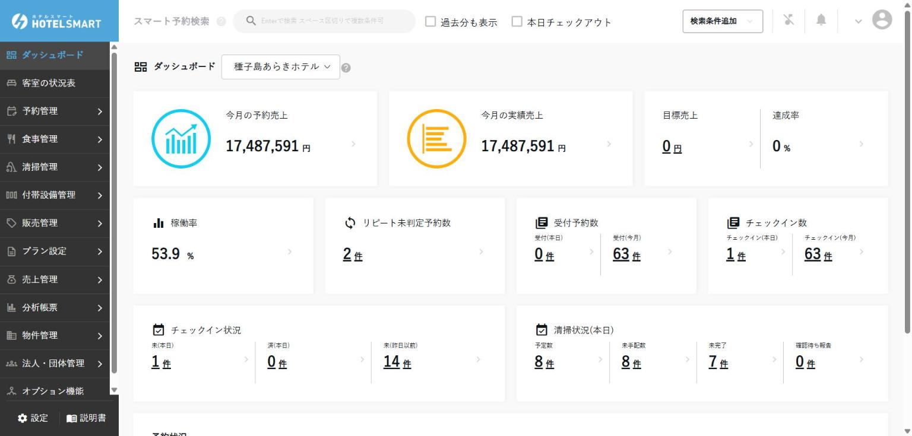
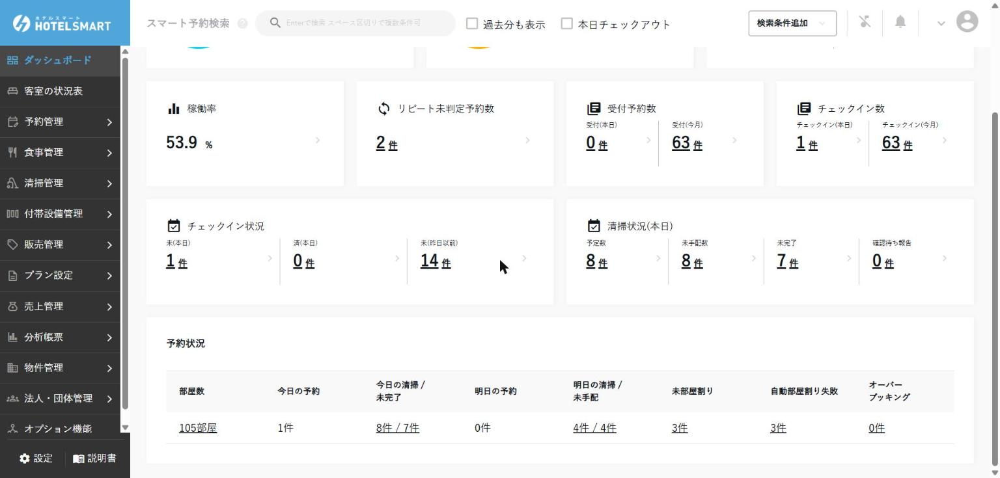
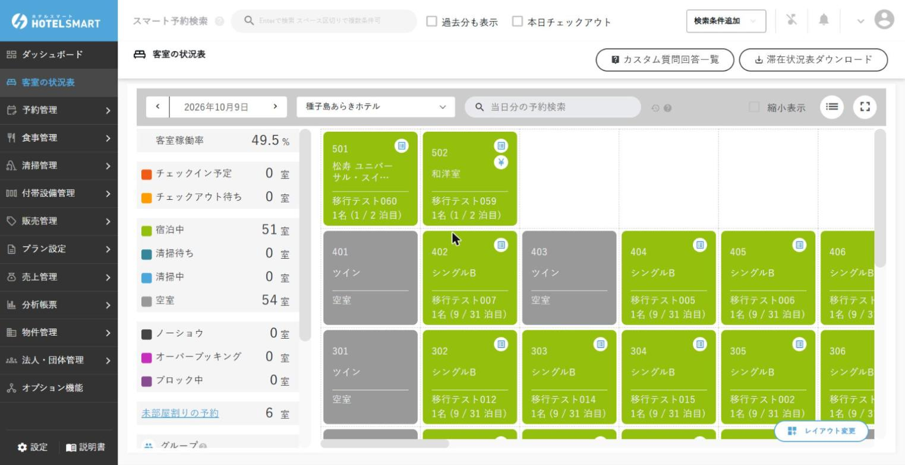
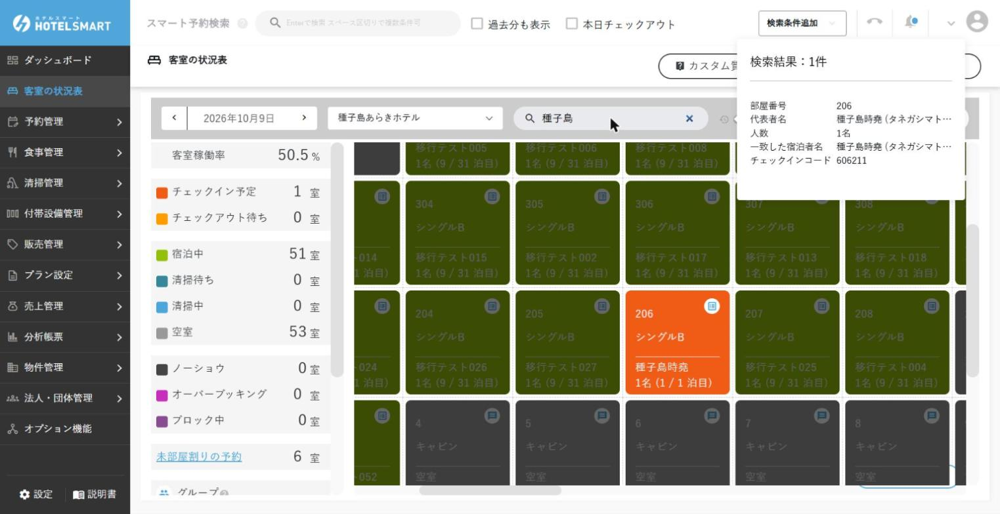
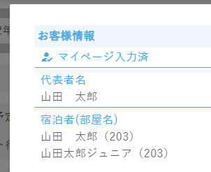
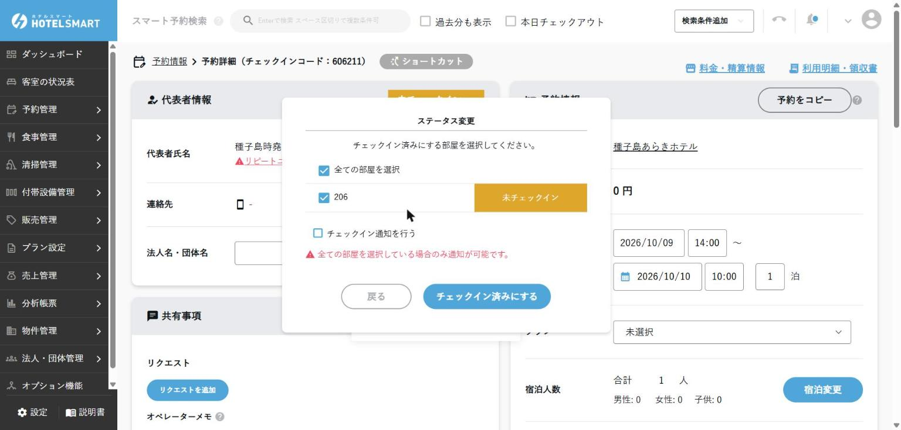
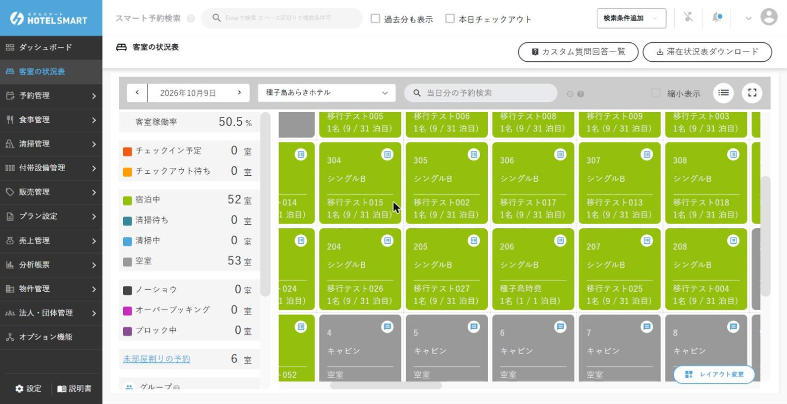
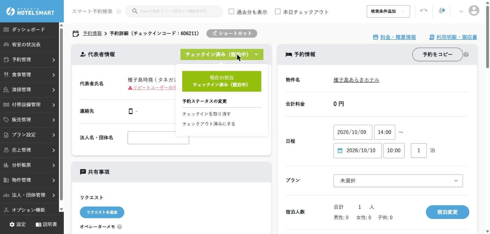
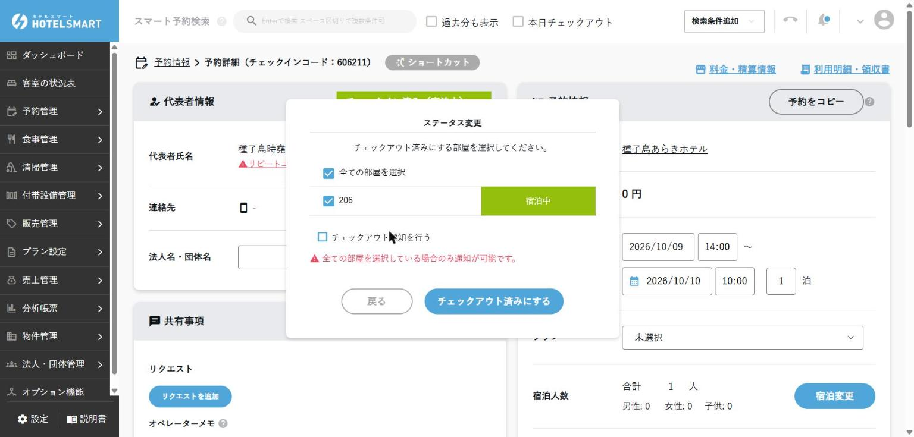
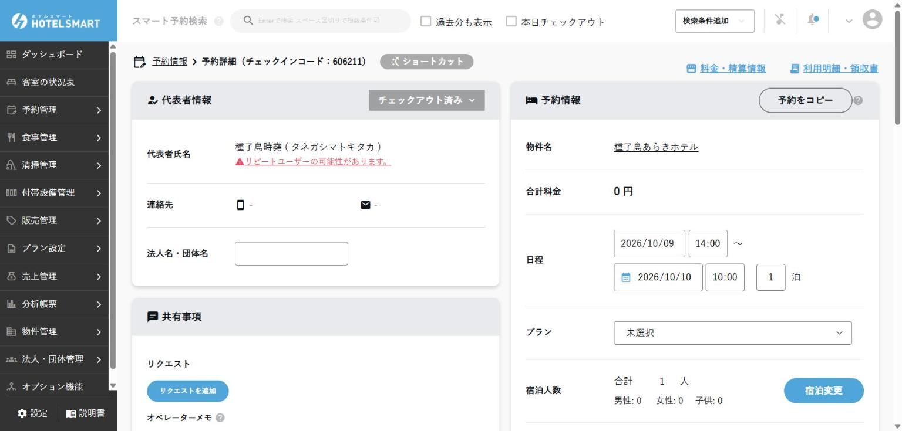

毎日の基本
1日のフロント業務
「出勤 → 到着対応 → 出発対応 → 引継ぎ」の順で、確認漏れを防ぐためのページです。
1. 出勤したら最初にすること
- 自分のアカウントでログインした
- 前のシフトからの引継ぎを読んだ
- 「チェックイン状況」と「予約状況」の表で、今日の予約とチェックインの件数を確認した
- 「未(昨日以前)」「未部屋割り」「オーバーブッキング」の件数と、未精算・注意が必要なお客様を確認した
- 「清掃状況(本日)」を見て、清掃担当へ伝える部屋変更・到着時刻変更がないか確認した
2. ダッシュボードの見方
ログイン後の最初の画面です。予約の詳細を編集する前に、今日の全体像を確認します。種子島あらきホテルのダッシュボードは、次の構成です（2026/10/10確認）。
今月の予約売上／今月の実績売上／目標売上・達成率
稼働率／リピート未判定予約数／受付予約数（本日・今月）／チェックイン数（本日・今月）
チェックイン状況（未(本日)・済(本日)・未(昨日以前)）／清掃状況(本日)（予定数・未手配数・未完了・確認待ち報告）
部屋数／今日の予約／今日の清掃・未完了／明日の予約／明日の清掃・未手配／未部屋割り／自動部屋割り失敗／オーバーブッキング。数字をクリックすると該当の一覧に移動します。

フロントが毎朝見るのは「チェックイン状況」「清掃状況(本日)」と「予約状況」の表です。「未(昨日以前)」はチェックイン漏れ、「未部屋割り」「オーバーブッキング」は当日の要対応です。未部屋割りの予約は、到着前に部屋を割り当てます（2026/10/10確認）。

数字の意味（公式マニュアルより）
各数字が何を数えているかは、公式マニュアルで次のように説明されています。表の表示名は、あらきホテルの画面の表示と同じです（2026/10/10確認）。数えている中身と、押したときの移動先は、あらきホテルの画面では未確認です。あらきホテルの画面には、表に無い「チェックイン数」「未(昨日以前)」「予定数」「未手配数」「確認待ち報告」「今日の予約」「明日の予約」「自動部屋割り失敗」も出ています（2026/10/10確認）。
| 表示 | 数えているもの | 押すと |
|---|---|---|
| 今月の予約売上 | 今月に受け付けた予約の合計金額（税別） | － |
| 今月の実績売上 | 利用日（無ければチェックアウト日）が今月の料金の合計（税別）。予約外の料金も入り、予約のステータスは問いません | － |
| 目標売上・達成率 | 目標売上設定で決めた今月の目標（税別）と、それに対する実績売上の割合 | 目標の金額を押すと目標売上設定へ |
| 稼働率 | 販売した室数を、部屋数（累計）で割ったもの | － |
| リピート未判定予約数 | 代表者が「リピーターかもしれない」と判定され、まだ確認していない予約の件数 | 該当の予約の一覧 |
| 受付予約数（本日・今月） | 本日／今月に新しく登録された予約の件数（宿泊日ではなく登録日で数える） | 該当の予約の一覧 |
| チェックイン状況 未(本日)・済(本日) | 今日がチェックイン日の予約のうち、まだチェックインしていない件数／チェックイン済みの件数 | 該当の予約の一覧 |
| 清掃状況(本日) 未完了 | 今日の清掃予定のうち、まだ清掃済になっていない件数 | 清掃予定表（日） |
| 予約状況 部屋数 | 物件に登録されている部屋数 | その物件の、今日から1か月先までの予約一覧 |
| 予約状況 未部屋割り | 宿泊期間に今日が含まれる予約のうち、部屋が決まっていない件数（明日以降に到着する予約は数えない） | 部屋割りの画面 |
| 予約状況 オーバーブッキング | 今日以降にチェックインする予約のうち、オーバーブッキングになっている件数 | 該当の予約の一覧 |
3. 客室状況を確認する
表の「表示」は、画面のステータス名です（公式マニュアルより。あらきホテルの画面では「宿泊中」「チェックイン予定」「チェックアウト待ち」「空室」を確認済み）。
| 表示 | 意味 | フロントの対応 |
|---|---|---|
| 空室 | その日に予約がない部屋 | 清掃状態も確認してから割り当てる |
| チェックイン予定 | その日にチェックインする予定で、まだチェックインしていない | 氏名・人数・支払い・連絡事項を確認 |
| 宿泊中 | チェックイン済みで、翌日以降も泊まる | 部屋移動や延泊は予約詳細から処理 |
| チェックアウト待ち | チェックイン済みで、その日にチェックアウトする予定 | 未精算と追加利用を確認 |
| 清掃待ち | 今日の清掃予定があり、清掃がまだ始まっていない | 清掃が終わるまで案内しない。清掃担当へ状況を確認 |
| 清掃中 | 今日の清掃が始まっていて、まだ終わっていない | 清掃完了を待つ |
| ノーショウ | 前日以前に始まった予約で、まだチェックインしていない | そのままだと売上・稼働率に入る（公式マニュアルより）。連絡状況を確認し、責任者へ報告 |
| オーバーブッキング | 同じ部屋に、期間が重なる予約が2件以上ある | どちらも勝手に動かさず、責任者へ連絡 |
| ブロック中 | 故障・工事などで販売停止中 | 理由と期間を確認し、勝手に解除しない |
| 部屋に出るアイコン（公式マニュアルより） | 意味 |
|---|---|
| 未収金あり（￥） | 未収金が残っている |
| 要領収書 | お客様マイページで「領収書が必要」と回答している |
| 宿泊台帳未入力 | お客様マイページの宿泊者情報の必須項目が入っていない |
| グループ | 複数部屋の予約の部屋 |
| 割り当て可能な予約あり（吹き出し） | 未部屋割りの予約の割り当て先の候補になる部屋 |
| 入れ替わりあり | その日にチェックアウトとチェックインの両方がある部屋 |
| チェックアウト済み | その日にチェックアウトが済み、同じ日のチェックインがない部屋 |
あらきホテルの画面では、白い丸に「¥」のアイコンが出ている部屋（502）と、空室のキャビンに吹き出しのアイコンが出ているのを確認しています（2026/10/09・10/10確認）。宿泊中の部屋の右上に出る帳面の形のアイコンの意味と、要領収書・宿泊台帳未入力のアイコンの見た目は、あらきホテルでは未確認です。


4. チェックインする
- 客室の状況表の上部にある［当日分の予約検索］にお客様の氏名を入力し、対象の予約（部屋）を特定します。該当する部屋がハイライトされます。画面最上部の「スマート予約検索」でも、当日以外を含む全予約から検索できます（複数条件はスペース区切り、「過去分も表示」も使えます）。

- 宿泊日、人数、部屋タイプ、連絡事項を読み合わせます。
- 宿泊者情報と本人確認書類など、施設で必要な項目を確認します。部屋に「宿泊台帳未入力」「要領収書」のアイコンが出ていないかも見ます（公式マニュアルより。マイページで宿泊者情報の入力が済んでいると、詳細の代表者名の上に「マイページ入力済み」と出ます。部屋の詳細での表示は、あらきホテルでは未確認。予約情報の一覧の上には「マイページ入力済」のアイコンの説明が出ています、2026/10/09確認）。
- 部屋番号と清掃完了を確認します。未割当なら責任者ルールに沿って割り当てます。


- 未収金が赤字で表示されていないか（部屋に「未収金あり（￥）」のアイコンが出ていないか）確認し、必要な精算を行います。公式マニュアルでは、未収金があるままチェックインしようとすると、注意のポップアップが出るとされています（あらきホテルでは未確認）。
- 「チェックイン」を実行し、画面が「宿泊中」になったことを確認します。

- 鍵と館内案内をお渡しします。

タブレットでのセルフチェックイン
あらきホテルでは、チェックイン用タブレット（らくらくチェックイン・確認動画・サポート通話など）を使います（2026/10/11 オーナー決定）。タブレットの表示内容の設定はチェックイン用タブレットを設定する（管理者）にあります。お客様の操作の流れは、公式マニュアルでは次のとおりです（画面の順番と文言はあらきホテルでは未確認）。
- 言語を選び、チェックインを選びます。
- メールやマイページで届いた6桁のチェックインコードを入れるか、QRコードをかざします（設定によってはコード無しで、名前か電話番号・人数・チェックアウト日で予約を探せます）。
- 案内を読み、宿泊約款などに同意します。
- 宿泊者情報を入力します。マイページで入力済みの項目は飛ばせます。
- 本人確認（確認動画の撮影など）をします。
- 完了画面で部屋番号などの案内が出ます。
- お客様がタブレットから「サポート通話」を押すと、施設のスタッフにビデオ通話がつながります（受けるPCの設定は本人確認の方式を決める）。
- パスポートと顔写真は、顔が写っていないと撮影・登録が終わりません（ほかの書類は判定しません）。
- 複数名の予約で到着がバラバラのときは、物件の設定で「宿泊者別チェックイン」を許可していれば、後から来た人も同じコードを入れて自分の手続きができます。
- タブレットでの支払いは分けられません。支払いを分けたいお客様は、フロントで精算します。
- タブレットに出たエラー（「チェックインコードが不正です」など）への対応は困ったときにまとめています。
公式マニュアルでは、お客様向けのセルフチェックイン案内資料（館内掲示用・メール添付用）が配布されていて、施設に合わせて編集して使えるとされています（あらきホテルでは未確認）。
5. チェックアウトする
- 客室の状況表で、お客様の氏名（［当日分の予約検索］）または部屋番号から部屋を開きます。
- 宿泊代、追加料金、入金済み金額を確認します。
- 未精算があれば支払方法を確認して精算します。
- 領収書が必要か、宛名・但し書きを確認します。予約サイトで事前決済した分は、ホテルでは領収書を出さず、予約サイトの領収書をご案内します（公式マニュアルより。領収書を発行する）。
- 鍵の返却を確認し、部屋の詳細の「チェックアウト」を押します。「チェックアウト」ボタンが出ないとき（状況表の日付がまだチェックアウト日になっていないときなど。2026/10/05確認）は、予約詳細の右上のステータスから「チェックアウト済みにする」を選び、チェックアウトする部屋を選んで実行します。


- ステータスが「チェックアウト済み」になったことを確認し、清掃担当へ共有します。

6. 次のシフトへ引き継ぐ
「見れば分かる」ではなく、次の人が迷わず行動できる形で残します。
- 未到着・遅着のお客様と連絡状況
- 未精算、金額差異、返金待ち
- 部屋移動、故障、ブロック、清掃待ち
- 貸出品・手配品・特別対応
- お客様からの依頼と、次に誰が何をするか
7. 日次締め（責任者）
営業日の売上や入金を確定する処理です。施設で機能を有効化している場合、設定した締め時刻を過ぎると日次締め画面に「日次の締めを行う」ボタンが表示され、責任者が確認してから押して締めます。
種子島あらき別館では、締め時刻（毎日04:00）を過ぎると、日次締め画面の一番下に「日次の締めを行う」ボタンが表示されます。締め時刻を過ぎても自動では締められません（2026/10/07確認）。締め時刻を過ぎたら、責任者が次の手順で締めます。
- 【売上管理】→【日次締め機能】を開き、「再取得」で最新の状態にして、対象日（まだ締めていない日付）と、注意点のある予約・精算情報・前受金情報を確認します。

- 対象日（締める日）のチェックイン・チェックアウト漏れがないか確認します。
- 未精算、現金・カードなど支払別の差異を確認します。
- 未対応の予約や明細がないか確認します。
- 差異や未処理があれば、締める前に対応します。
- 問題がなければ「日次の締めを行う」を押し、「（物件名）の（日付）分の売上・売掛金を締めますか？」の確認で物件名と日付を確かめてからOKを押します（2026/10/07確認）。
8. 帳票・CSVを出す（責任者）
日々の売上・入金の確認や名簿の出力に使う帳票です。以下は公式マニュアルの説明をまとめたもので、出力した結果はあらきホテルでは未確認です。どの帳票も物件ごとに出すので、本館と別館は別々に出力します。
| 知りたいこと | 使う帳票 |
|---|---|
| 1日の稼働室数・人数・売上 | 稼働出力 |
| 支払い方法別の入金額（レジとの照合） | 精算情報／精算情報（内訳） |
| 滞在中のお客様の未収金 | 滞在未収金、前受金・滞在未収金残高一覧 |
| 誰が料金・精算を変えたか | 料金・精算_更新情報 |
| 宿泊者名簿 | 宿泊者台帳、宿泊者情報の一覧 |
| 予約の一覧（当日到着の一覧など） | 予約CSV |
| 締め後に確定した売上・費用・入金 | 収支実績報告書 |
稼働出力（1日分の稼働と売上）
- 〖分析〗の「稼働出力」で物件と日付を選んで「出力する」を押すと、Excelが1つ保存されます。物件を選ばずに押すと出力されません。
- 販売できる客室数・定員（停止中の部屋を除く）、稼働室数・延べ人数、当日予約・ノーショウ・当日キャンセルの室数、当日と月初からの売上（税込・税抜）、前年同日との比較、宿泊費以外の売上の内訳が載ります。
- 月末日を選ぶと、月初からの累計がその月の合計になります。日次締め時刻（あらきホテルは04:00）が1日の区切りです。
- 対象日より後でキャンセルされた予約も、その日の実績に入ります。予約外の料金は合算し、ポイント利用・税・不計上・部分支払いの明細は除きます。
精算情報CSV・精算情報（内訳）CSV
- 〖会計〗の「精算情報」で物件と期間（1か月以内）を選んで出します。支払い方法ごとの行と日付ごとの列で、その日が支払日の精算の合計（返金は差し引き）が並びます。一番上は「支払い方法未入力」の行です。
- 「精算情報（内訳）」は1日を選んで出し、その日が支払日の精算が1件1行で出ます（登録日時・チェックインコード・部屋番号・金額・支払い方法・売掛先・備考など）。予約外_料金・精算の分は、チェックインコードと代表者名が空欄です。
- どちらも予約の分と予約外の分を含みます。期間集計のファイル名の日付は出力した日（日次締めをしている物件は締めの日付）です。
- 「表示しない」に設定した支払い方法は、期間内に精算が無ければ行ごと省かれ、精算があれば出ます。
- 支払日で精算を絞る帳票は無いため、OTAの事前決済の内訳はこの帳票では分かりません。
前受金・滞在未収金残高一覧CSV
- 選んだ日の時点で、予約ごとに前受金（先にもらっている分）と滞在未収金（まだもらっていない分）の残高が分かります。物件と日付（本日まで）を選んで出します。日次締めをしている物件だけ出力できます。
- 1予約（予約外は1登録）1行で、どちらの残高も無い予約は出ません。予約外の行は、チェックインコード欄が「（予約外）」で、日付の欄は空です。
- 料金は利用日（無ければ、予約はチェックアウト日、予約外は登録日）で数え、料金と精算の差し引きで前受金か未収金かが決まります。キャンセルした予約は含みません。
滞在未収金CSV
- 〖会計〗の「滞在未収金」で物件と対象日（本日以前）を選んで出します。滞在中精算チェックリストの帳票版です。
- 対象日に滞在中（チェックイン済み）の部屋が1行ずつ並び、税抜・税込の未収金合計が出ます。未収金0円の部屋も出ます。チェックイン前の予約とチェックアウト済みの予約は出ません。
- 対象日より先の日付の料金、不計上の料金、部分支払い・金額指定の支払いに紐づく明細は、未収金に数えません。
料金・精算_更新情報CSV（操作の履歴）
- 料金・精算を、いつ・誰が作成・変更・削除したかを調べられます。物件ごとに出し、期間は3か月以内です。
- チェックインコードかOTAの予約番号で予約を指定すると、その予約の履歴が操作日に関係なく全部出ます（予約外の伝票は含みません）。料金／精算の別や、新規・削除・変更前・変更後で絞れます。
- 変更は「変更前」と「変更後」の2行で残ります。操作者の欄（D列）で、スタッフ・タブレット・サイトコントローラーなど誰の操作かが分かり、アカウントを分けていればアカウント名が出ます。
宿泊者台帳（旅館業法の名簿）
- 〖旅館業法対応_帳票〗の「宿泊者台帳」で、物件・期間・条件を選んで出します。5000件を超えると出力できないので、期間を分けます。
- 条件は「チェックイン」（初期値）・「利用日」・「チェックアウト」から選びます。「利用日」はその期間に泊まっている予約で、チェックアウト当日とデイユースは含みません（例：7/8着・7/10発なら7/8と7/9が対象）。
- チェックイン・チェックアウトの予定と実際の時刻、国籍・氏名・住所・職業・旅券番号・前泊地・行先などが出ます。
予約CSV（予約単位・部屋単位）
- どちらもチェックイン日が期間内の予約が対象です。「予約単位」は1予約1行、「部屋単位」は1部屋1泊ごとに1行（2部屋3泊なら6行）です。
- 国籍・人数の内訳・予約経路・料金科目別と支払い方法別の金額・事前決済額と現地決済額・リクエストやオペレーターメモなどが出ます（部屋単位はOTA手数料も）。金額は原則税別です。
- 予約単位の期間を今日だけにすると、今日チェックインする予約の一覧として使えます。
- キャンセルだけを出すことはできません。「キャンセルを含む」で出してから、キャンセルの行を見ます。
宿泊者情報の一覧
- 予約管理 → 宿泊者情報 に、氏名・物件・チェックインコード・予約経路・日程・連絡先が並び、「詳細を見る」でお客様詳細が開きます。予約詳細の〖宿泊者情報〗で氏名を押しても開けます。マイページで入力された内容もここで見られます（過去の予約も可）。
- お客様詳細で直したら「変更を保存する」を押します。サインとフォームメモはお客様しか入力できません。
- 年代などでの絞り込みはできないので、必要ならCSVを出して加工します。同行者の情報は予約詳細から消せ、代表者の情報は予約を削除すると消えます。データは契約期間中は残り、登録した画像は消せない（白紙の画像に差し替える）とされています。
収支実績報告書
- 売上管理 → 収支実績報告書 で、物件（1つずつ）と期間（3か月以内）を選ぶと、売上・費用・精算・前受金の入金が出ます。日次締めをしている物件だけ集計されます。
- 集計は締めの後に自動で行われ、売上と精算はその時点の内容で確定し、後から直しても集計し直されません。費用入力（月毎）と前受金の入金だけは、開くたびに最新の内容で集計されます。選べるのは集計が終わった日だけです。
- 売上は税抜で、利用日（無ければチェックアウト日）の日に入ります。税・不計上・ポイント利用は含まず、キャンセルした予約の金額も含みません。
- 精算は、現金など売掛にならない支払いは支払日、売掛先に紐づく支払い（予約経路・カードなど）は売掛金設定の起算日で数えます。精算情報CSVは支払日で数えるので、同じ期間でも金額が合わないことがあります。